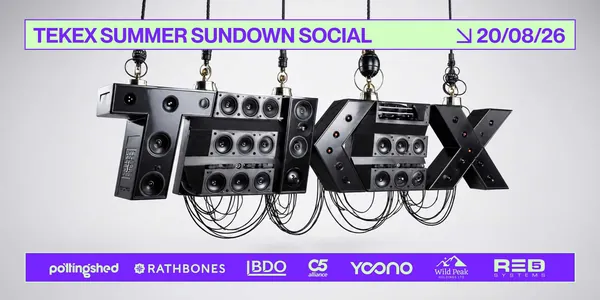
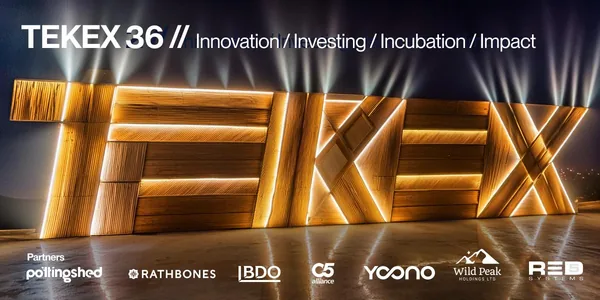
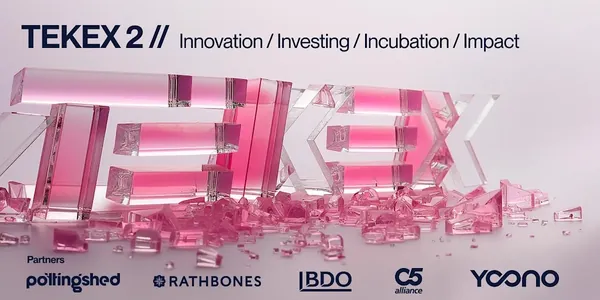
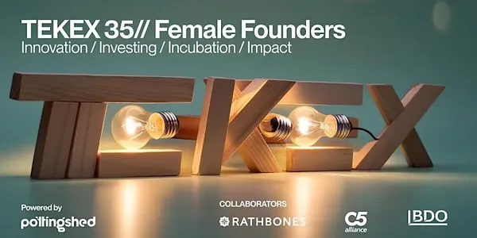
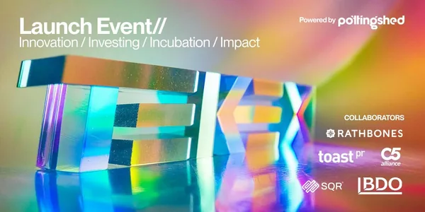
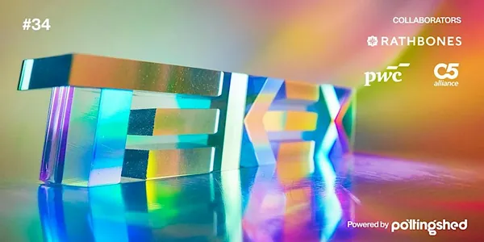
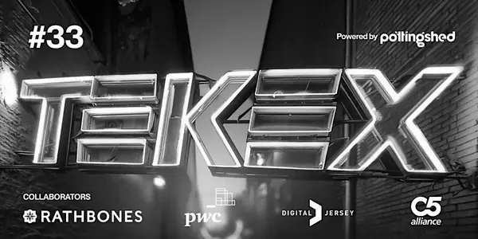
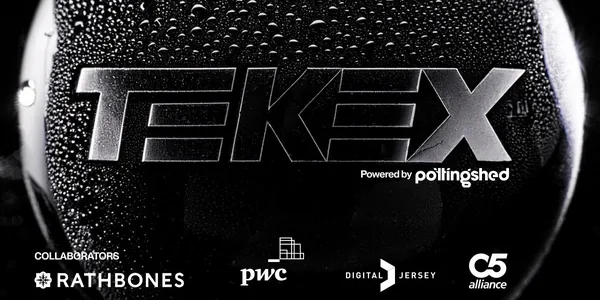
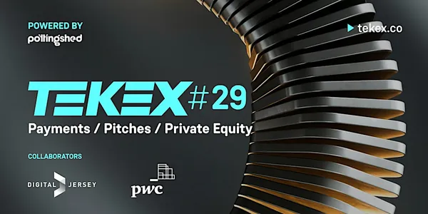

TEKEX IOM3
Global Innovation. Isle of Man Opportunity.
Isle of ManSantander Work Cafe
Register for TEKEX IOM3 on Eventbrite (opens in a new tab)Founders on stage, investors in the room, and the conversations that follow — across Jersey, Guernsey and the Isle of Man.
The next events are being lined up now. Stay in the loop to hear first.
Global Innovation. Isle of Man Opportunity.
Isle of ManSantander Work Cafe
Register for TEKEX IOM3 on Eventbrite (opens in a new tab)TEKEX is back in the Isle of Man, this time to identify global innovations that could become valuable Isle of Man opportunities, then connect each one with the local investment, partners and decision-makers required to launch it.
Jason Bissell, exited founder and now entrepreneur, will be speaking on Innovation Islands and what’s next for the Crown. Mark Sutcliffe will deliver the keynote on connecting ambitious innovation with agile jurisdictions, in his talk ‘The Billion Dollar Exit to Building in the Crown’.
You'll also see a panel debate and have the chance to put your questions to founders.
All ticket proceeds go to Craig’s Heartstrong Foundation.
Line-up

The Sundown, St Helier
We'll be meeting at The Sundown for our Summer Social.
There'll be a live jam session on stage with local musicians and all-round good vibes after our Good Vibes hack session.

BDO Jersey, St Helier
Get ready for an awesome in-person experience at TEKEX 36. It's the perfect chance to connect, learn, and witness game changers and passionistas.
Our line-up is once again a colourful blend of founders, some in fundraise stage and one whose product has 20 million users.

Santander Work Cafe, Douglas
TEKEX IoM 2 is where innovators, makers and tech lovers come together to share ideas, create projects and network. Whether you're a newbie or a pro, it's all about learning, collaborating and having fun.

BDO, St Helier — streamed to Guernsey
Our second Female Founder event, in collaboration with Alt Collective, with a dynamic line-up of founders and leaders. Alt Collective hosted, with an introduction from compère Sophie Clyde-Smith, streaming across both Guernsey and Jersey.
Thanks to our collaborators: Rathbones, BDO and C5.

Santander Work Cafe, Douglas
The launch of TEKEX in the Isle of Man: an innovation community connecting investors, founders and professionals across the Crown Dependencies.
Jayne Sibley's Sibstar won Dragons' Den and Sara Davies as an investor, and has already raised successfully through TEKEX. Shelley Langan-Newton, a founder superstar in the Isle of Man, joined our stage as SQR entered its funding round. Tim Huelin, another successful Jersey-based founder, has built Daysium — ‘Count your Days’ — through our network.
Ticket fees went to Manx Decaf and Forget Me Not IoM, given Sibstar's support for people living with dementia.

BDO Jersey, St Helier
An incredible line-up of speakers and an open and honest AI debate — The Great DebAIte, with Oliver Farber, Nyxie Redondo, Gus Fraser, Charlie Morgan, Rory Steel and more.

C5 hubs, Jersey and Guernsey — live-streamed
Our usual format: six speakers, a strict ten-minute presentation each, followed by Q&A — live-streamed between the C5 hubs in Jersey and Guernsey.
Hanna Roos: “We give power back to clients, and joy back to lawyers.” Aavalynx combines AI with human legal expertise to make dispute resolution faster, cheaper and more human. George McLeod asked about “The £3 Trillion Blind Spot: Reinventing Trusts for the 99%”, and Andy Lowe presented his first breakout film.
Thank you to our collaborators: PwC, Rathbones, C5 and Digital Jersey.

C5 hubs, Jersey and Guernsey — live-streamed
A melting pot of talent, founders and innovators from both islands, plus government updates on business support: Guernsey's GEIS scheme (Sasha Kazantseva) and the Better Business Support Scheme (Paul Murphy).
Headliners included Summit Deals, a new investor platform housing some of TEKEX's opportunities and investors; machine learning against the Channel Islands' skin-cancer rate, the highest in the British Isles; and how the microbiome can be harnessed for health.
C5 Alliance, Windward House, St Helier
An evening of founder talks and networking, with off and on island speakers covering everything from space to finance and film to geopolitics.
Thanks to our collaborators: PwC and Digital Jersey.
BDO, St Helier
This edition celebrated female founders from fintech to UX, to a capacity audience.

C5 Alliance, Windward House, St Helier
Swagger Paws, a Jersey-based e-commerce company built for dog walkers by dog walkers, looking for its next phase of growth. Jake Schofield on the highs, lows and lessons of creating and exiting a health-tech start-up.
Then the most common pinch point at TEKEX — payments — with Robert Crutchington on how Jersey can benefit from an independent payment gateway, David Parkinson on Bitcoin and a multi-planetary future, and Seb Lawson on AI and education in the workplace.
Get upcoming event announcements and booking details from Jersey, Guernsey and the Isle of Man, straight to your inbox.